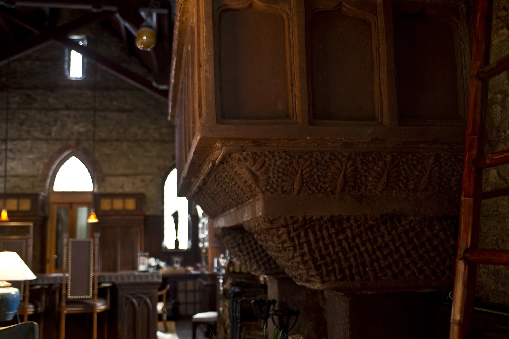
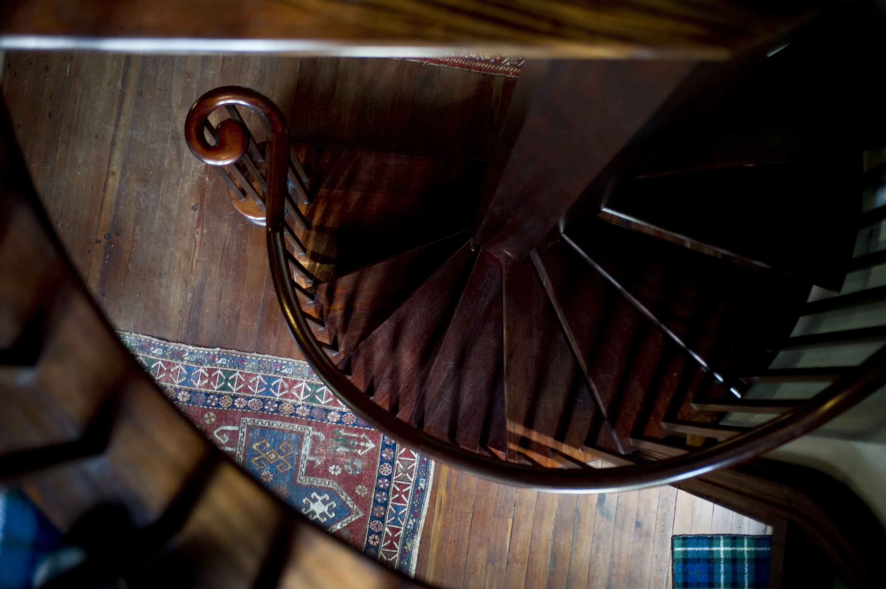
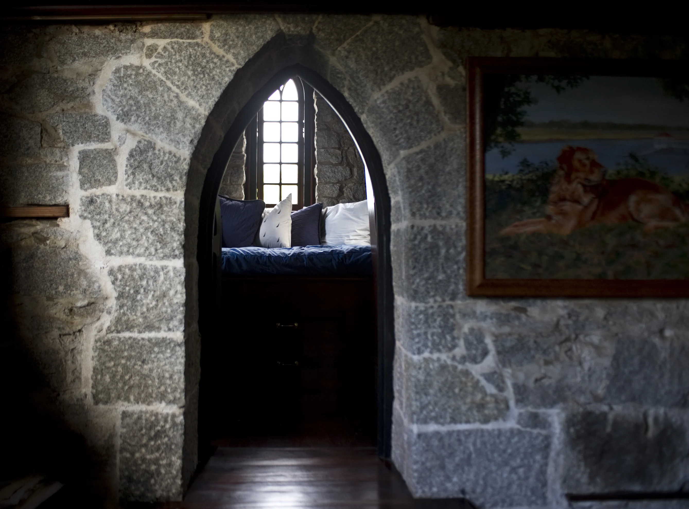
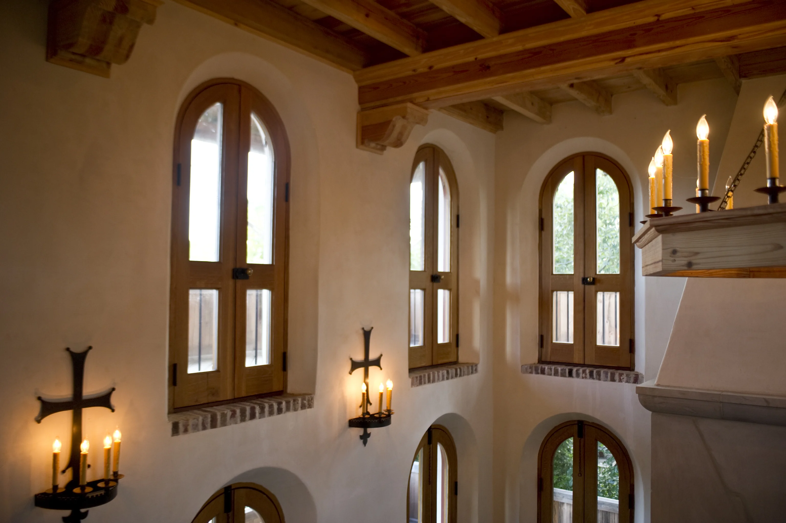
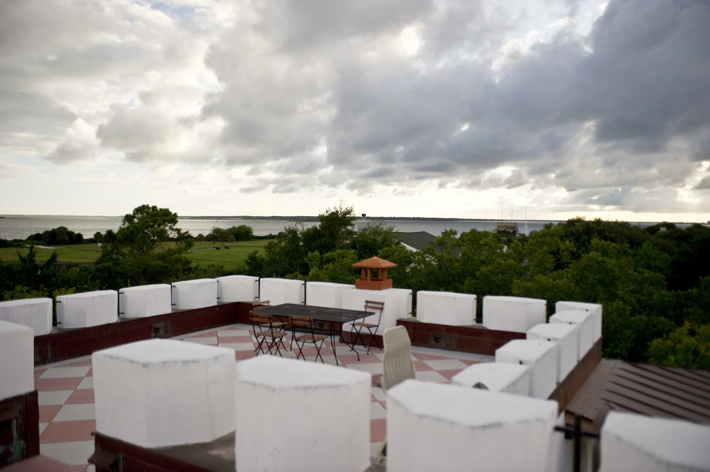

Chapel of the Holy Cross · W. W. Deveaux, Architect, New York
Sacred
beginnings.
On the 12th of September, 1891, a cornerstone was laid in a ceremony on the western end of Sullivan's Island. What rose from that rubble granite foundation was described in the contract as "Medieval Gothic" — designed by W. W. Deveaux of New York, built by Charleston contractor Robert McCarrel for slightly over $6,000.
The stone walls were laid thick enough to hold a century's worth of whispers — and they did. Deeply recessed pointed-arch windows threw long shadows across the nave. A corner bell tower gave the modest mission chapel the silhouette of something older than its modest budget suggested.
Four years later, on September 12th, 1895 — the building's fourth birthday — Bishop Ellison Capers consecrated the chapel. Inside: a stained-glass window in memory of Miss Ella M. Benjamin. A silver communion service dedicated to the Faithful Departed. The bell had been hung. The cement walks had been laid. The mission had become a sanctuary.






"The stone nave was bare, its tall ceiling carried by open timber trusses and hammer beams — light entering only through the deep reveals of pointed-arch windows."— Witold Rybczynski, The Pennsylvania Gazette
The Taking · Fort Moultrie Condemnation
Sacred ground
absorbed by the federal machine.
In 1902, the United States government moved to condemn the Chapel of the Holy Cross. Fort Moultrie was extending its Endicott-era coastal defenses — disappearing artillery carriages, minefields, rapid-fire guns trained on the harbor mouth. The stone chapel stood in the path of a militarized landscape.
The trustees agreed to sell. $9,000. The keys were formally surrendered in 1907. The congregation stripped what it could — the memorial stained glass, the silver communion service dedicated to the Faithful Departed, the chancel beams — and carried them to a new Chapel at 2520 Middle Street, holding their first service there in June of 1908.
When Fort Moultrie was deactivated in 1947, the building passed through a quiet relay: War Assets Administration → J.C.W. Bischoff → the Town → the South Carolina Lutheran Synod. Pastor J. Marion Rhoden was appointed in 1952. Fifty charter members. The same bare granite walls. The same thick stone that had held Episcopal liturgy for sixteen years now held Lutheran hymns for twenty more. In 1972 the congregation relocated to Isle of Palms and became St. Mark's. The chapel was deconsecrated.


For the next forty years, the rough granite walls absorbed the prayers of soldiers the same way they had absorbed the Episcopal liturgy before them.
A Place Reimagined · The Winter Hall
Kept where
it had always stood.
In 2002, a plan to relocate the chapel to the I'On development in Mount Pleasant was proposed. Local preservation action kept the building on Sullivan's Island. Its next chapter would unfold here, where it had stood for more than a century.
New World Byzantine was engaged to design an addition that would look older than the Gothic church it joined. The rounded Romanesque arch became an answer to the pointed Gothic arch: two architectural traditions meeting at the same threshold.
The former chapel became the Winter Hall, home to the kitchen, dining hall, library and minstrel gallery. Its thick stone walls and timbered spaces became the heart of a home built for hospitality.


The Keep · New World Byzantine Architecture
The Summer
Hall.
Reinforced concrete walls. Massive cypress timbers. A geothermal heat pump sunk beneath old stone floors. Romanesque arched openings answering, point-for-arch, the Gothic vocabulary of a chapel built one hundred nineteen years before.
The Norman Keep, also known as the Summer Hall, was completed in 2010. Its arched openings, porches and rooftop terraces offer a different relationship to the island: open to the garden, the harbor and the changing coastal light. The addition houses the undercroft, laundry, bedchambers and associated living spaces; the Morning Courtyard and Summer Lawn extend the life of the house outdoors.
The upper bell tower had been removed during the military era; crenelations were installed in its place. By 2010, the transformation was complete — something that had never before existed: a private castle on a Carolina barrier island.




The Name & the Island
The castle's name recalls the island's Revolutionary history. On June 28, 1776, William Moultrie's forces defended the palmetto-log fort on Sullivan's Island against the Royal Navy. That earlier fort and the nineteenth-century chapel are distinct buildings, separated by more than a century. National Park Service ↗
The Mugdock Decree
"Strive for the luxury of expert simplicity reflective of the comfort and utility of a modern day beach castle."Return to the photographs